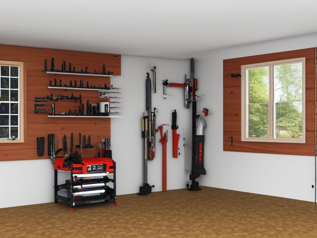

Garage micro zone
The Power Tool and Battery Zone
Holds the powered tools, their packs, and their chargers so a tool is always ready to run and nothing is left charging unattended.
One session: 60-90 min. most of it in Sort, since every pack has to be tested in its own tool

What done looks like
One shelf per battery system with its charger mounted at the front edge and no pack sitting on it, every drill and saw in its case or on a labelled hook with guards down, and bits, blades, and sanding discs in the shallow drawer underneath.
Check these before you start
- Burn or fireLithium packs left charging overnight on a wooden shelf, or stored alongside the petrol can and the rag bin.
- Fall, cut, or crushA circular saw stored with its guard wedged open, or a table saw blade left raised where a hand reaches across the shelf for a pack.
- Water and electricityCharger bases sitting on the slab where meltwater runs off the car, and extension leads daisy-chained to feed the whole shelf.
The six passes, in order
Work them in this order. Sorting after you have arranged things means arranging things you were about to remove.
Sort
Decide what stays. Everything else leaves the zone now.
Line every pack up and run it in the tool it belongs to until you know which ones still hold a charge. Packs that die in a minute, chargers for the drill you sold, and the sander with the taped cord all leave today.
Straighten
Give what stays a home, placed where the hand actually reaches.
Group by battery system rather than by task, so one shelf carries the tools, packs, and charger of a single platform and you stop carrying a green pack to a red tool. Blades, drill bits, and sanding discs go in a shallow drawer directly beneath the tools that take them.
Shine
Clean it, and use the cleaning to inspect what you cannot see when it is full.
Brush or blow the motor vents on each drill and saw clear of packed dust, and clean the battery contacts and the charger terminals. A vent clogged with plaster dust runs a motor hot enough to shorten its life.
Safety
Make the zone safe for everybody who uses it, including the shortest person.
Packs come off the charger once they are full and sit at partial charge on a shelf well clear of the fuel can and the rag bin. Confirm every blade guard springs back freely on its own, and retire any tool with a cracked case rather than pushing it behind the others.
Standardize
Write down the best way you know today, so it survives you forgetting.
One shelf label per battery system, charger mounted at the front edge, so a pack left charging shows as a lump on the shelf edge you can see from the doorway without walking in.
Sustain
Attach the reset to something that already happens, so it keeps itself.
Pulling a full pack off the charger is part of finishing the job, the same as putting the drill back in its case. Nothing sleeps on a charger, whatever the manual claims about smart cut-off.
The tool whose batteries no longer exist
Somewhere on that shelf is a good tool on a dead platform: the drill from the brand you left behind, one tired pack, and a charger nobody makes any more. You keep it because the tool itself is fine, and it is. Decide this with money rather than loyalty. Price one replacement pack today. If a pack costs more than half what a current equivalent tool costs, or you cannot buy one at all, the tool is finished, so sell it with its charger while it still means something to somebody, or take it to electrical recycling. Running two battery systems is a cost you can defend. Running three means a hunt through three shelves every time you want to put a hole in a wall.
Cleaning it properly
Dust is what turns a warm tool into a hot one, so the motor vents come first. Work back to front along each shelf, clearing vents and contacts before you touch the slab underneath.
Inspect as you clean. Cleaning is the only time you see the zone empty, so use it.
- A battery pack that feels warm, looks swollen, or has a split case, spotted while you wipe it down.
- Green or white corrosion crusting on the battery contacts or the charger terminals.
- A cracked or heat-discoloured tool housing, or a charger case that has browned around its own vents.
- Damp or rust spreading on the slab under a charger base, where water off the car reaches the power.
The standard that keeps it fixed
No battery sleeps on a charger, and no tool goes back on the shelf with its guard held open.
Reset trigger. When you lock the side door for the night, your route takes you past the charger shelf, and anything still sitting on a charger comes off on the way.
Next in this room
- The Hand Tool Wall and Cabinets, the zone before this one
- The Automotive Care Zone, the zone after this one
- All 7 micro zones in the Garage
Related reading
- What is 6S?
- This zone's safety pass, in full
- Is one spot in this zone always the one you skip?
- Why this zone gets messy again
- Decluttering vs. organizing
- Before you buy storage for this zone
- Still does not fit, even after the honest count?
- Does something in this zone actually get used somewhere else?
- Stuck on one item in this zone?
- Written the standard, but nobody else follows it?
- Does everyone in the house agree what "done" looks like here?
- Does more than one person use this zone?
- Found a duplicate of something in this zone?
- Why the standard above names one home per category
- Is the everyday item in this zone actually the easy one to reach?
- Not sure whether to keep something in this zone?
- Does this zone keep running out of something?
- Started this zone and stalled partway through?
- Have you stopped noticing the clutter in this zone?
When you want it off the screen
Carry The Power Tool and Battery Zone into the room
The method above is complete and free. The Whole House Print Pack puts The Power Tool and Battery Zone and the other 113 micro zones on 684 printable cards, so the steps you just read are not stuck behind a phone screen while your hands are full.
The Print Pack, 19 dollarsJust this zone, 4 dollarsOr draw a card free
The Power Tool and Battery Zone on its own is 4 dollars for 6 cards. All 114 micro zones is 19 dollars for 684. The whole house is the better buy; the single zone is here so you can take only what you are working on.
If The Power Tool and Battery Zone keeps fighting back, the real problem usually sits somewhere else in the room. A one hour virtual consult is 250 dollars: we find the function, the friction and the root cause together, and you keep a written standard for the space. See what a consult covers.